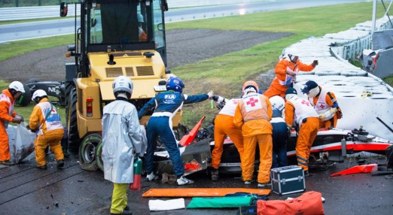
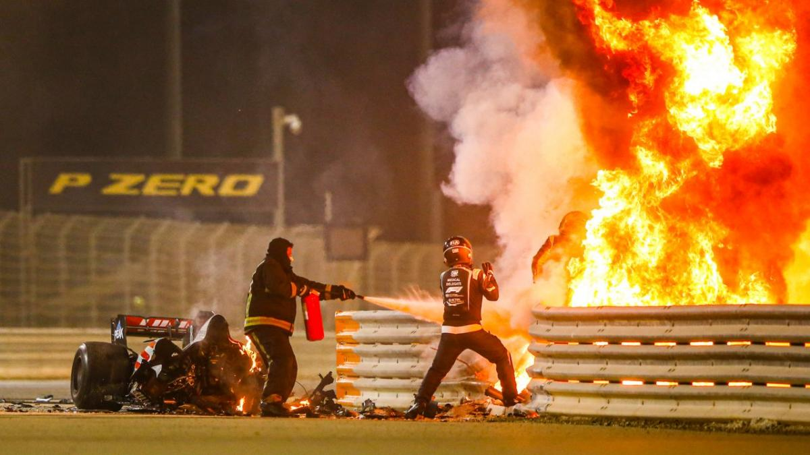
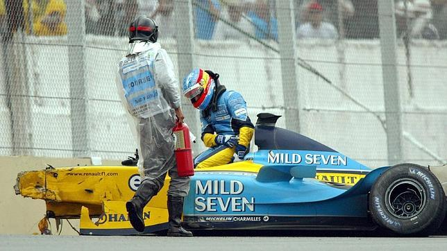
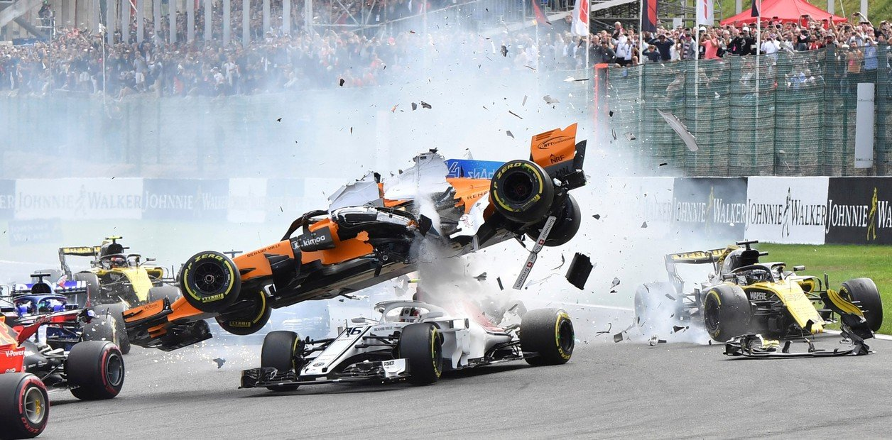
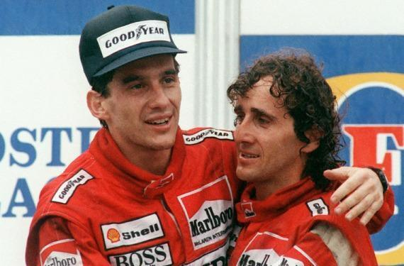

|
|
|---|
|
|
|---|
| |
|---|---|
|
La Fórmula 1 es un deporte que incluso en sus días más tranquilos da que hablar.
Será que los deportes de motor siempre ofrecen intensidad, potencia, velocidad que suman en un
espectáculo teatral que capta millones de mentes. Los siguientes son solamente algunos
de los momentos más memorables en la historia de la Fórmula 1.
A continuación se mostrarán desde los momentos más inolvidables, hasta los desastres, accidentes y "trampas" contra el reglamento
más controversiales y que conllevado más polémica.
|
Recordamos 4 carreras épicas de Fórmula 1, que además son también algunas de las mejores carreras de
F1 de la historia.
Grandes Premios que todo aficionado a la categoría reina debe ver alguna vez en la vida o, como mínimo, conocer lo que pasó.
En los 70 años que se ha disputado el campeonato, más de 1.000 carreras en total, se han celebrado pruebas legendarias que
guardan un lugar especial en la historia de la F1.Bajo la lluvia, con batallas dignas de recordar y nombres como Senna, Prost o Villeneuve como protagonistas.
Viajamos al pasado para recordar 4 de las mejores carreras de la historia de la Fórmula 1.
| 4. Jacques Villeneuve y Ralf Schumacher (1994)Espectacular y, desafortunadamente trágico, fue el protagonizado por Jacques Villeneuve y Ralf Schumacher. El alemán frenó brusca e inesperadamente con el canadiense detrás y el monoplaza de éste 'despegó' y voló hasta chocarse contra un muro. Los pilotos sobrevivieron, pero un comisario murió tras golpearle un fragmento del coche de Villeneuve. En el trágico 1994 también se produjo uno de los más recordados: Rubens Barrichello en Imola. El fin de semana maldito pudo ser aún peor, pero el brasileño perdió el conocimiento en un primer impacto en los entrenamientos y luego dio varias vueltas de campana, quedando boca abajo. Se rompió la nariz y un brazo. 3. Niki Lauda en Alemania (1976)La vida del tricampeón austríaco corrió serio peligro a mediados de la década de los 70 cuando se encontraba disputando el Gran Premio de Alemania que tuvo lugar en Nurburgring en 1976. Lauda perdió el control de su Ferrari en la salida de una curva del trazado alemán y chocó fuertemente contra las protecciones, lo que ocasionó la aparición de llamas alrededor de su cuerpo y que los pilotos Arturo Merzario, Guy Edwards, Brett Lunger y Harald Ertl le salvaran la vida sacándole del monoplaza.   2. Fernando Alonso en Brasil (2003)El primer gran susto que tuvo el piloto español fue, sin lugar a dudas, el que tuvo lugar en el circuito de Interlagos allá por el año 2003, el de su debut como piloto de pleno derecho en la escudería Renault. El monoplaza azul y amarilla del asturiano impactó en medio de la entrada a la recta de meta con un neumático desprendido a consecuencia de una colisión previa de Mark Webber. Lamentablemente, no pudo esquivarlo y sufrió aquel aparatoso accidente por el que le trasladaron al hospital. Siempre se recordará esa imagen recostado en la camilla con el pulgar arriba para tranquilizar a todo el mundo. 1. Hamilton y Rosberg (2016)Este choque puede que todo el mundo lo recuerde, la colisión entre los compañeros de Mercedes Lewis Hamilton y Nico Rosberg en el GP de España de 2016. Rosberg había ganado las cuatro primeras carreras de la temporada, algo que no gustó a Hamilton. En Barcelona, los compañeros de equipo estaban tan preocupados el uno por el otro en las primeras curvas de la carrera que el Gran Premio terminó en una pesadilla para el jefe del equipo, Toto Wolff, cuando los dos chocaron y terminaron varados fuera de la pista. Poco después, Nico Rosberg decidió dejar la Fórmula 1 y fue sustituido en Mercedes por Valtteri Bottas.   | ||||||||||
Así, los equipos pasan largos periodos de tiempo evaluando las reglas e interpretándolas a su manera y, a veces, esas interpretaciones llegan a lo que algunos consideran que es el límite de lo legal. A continuación, te mostramos algunas de las diferentes trampas, escándalos e infracciones al reglamento cometidas por equipos y pilotos y que han pasado a la historia.
| | ||
|  |
|
|